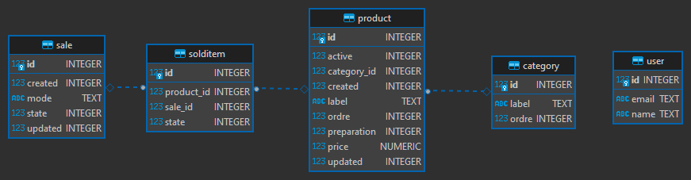
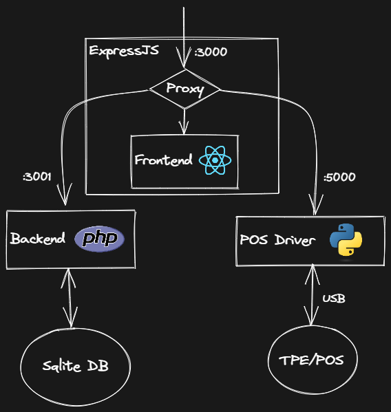
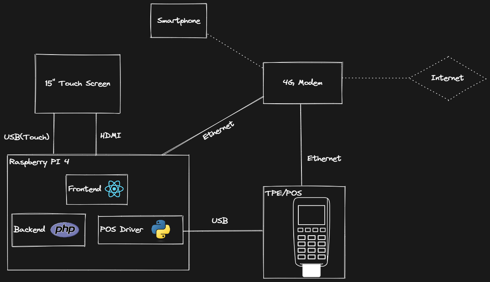

🐘
TechnoZaure
Nantes 2022 #2
Track Tech

Pourquoi un logiciel de caisse ?
Pourquoi un logiciel de caisse ?
Contexte
Forum des associations
Buvette du forum (avec restauration)
Buvette
🛒Entre 70 et 100 clients

Additions à n'en plus finir
💳TPE avec saisie manuelle
Besoin
Faciliter les calculs
Communiquer avec le TPE
Historisation des transactions (→ comptabilité)
Existant
1 ERP (odoo), une solution en client lourd ...
Rien de concluant
Quels aspects et besoins ont été pris en compte
Quels aspects et besoins ont été pris en compte
- Besoin comptable
- Facilité d'utilisation
- Connexion au TPE
- Responsivité (multi-device)
- Produits modulables/editables
- Statistiques sur les ventes
Utilisateurs et formation
- Tech & non-tech
- Jeunes & non-jeunes
Objectif : Formation de l'utilisateur minimale
Une IHM est comme une blague, s'il y a besoin de l'expliquer, c'est
que ce n'est pas bon.
Résultat :
Formation initiale : 10 min / Succédé par des formation en pair à pair
Formation initiale : 10 min / Succédé par des formation en pair à pair
Petite démo
Séniorité rime avec priorités
Séniorité rime avec priorités
-
Temps de dev faible :
- Focus sur les objectifs principaux : connexion TPE
- Impasses : Sécurisation, branding open-source, nommage, tests ...
Seniorité vs juniorité
- Problème simpliste 
- Efficacité
- Choix des technos
Architecture software

Architecture hardware
